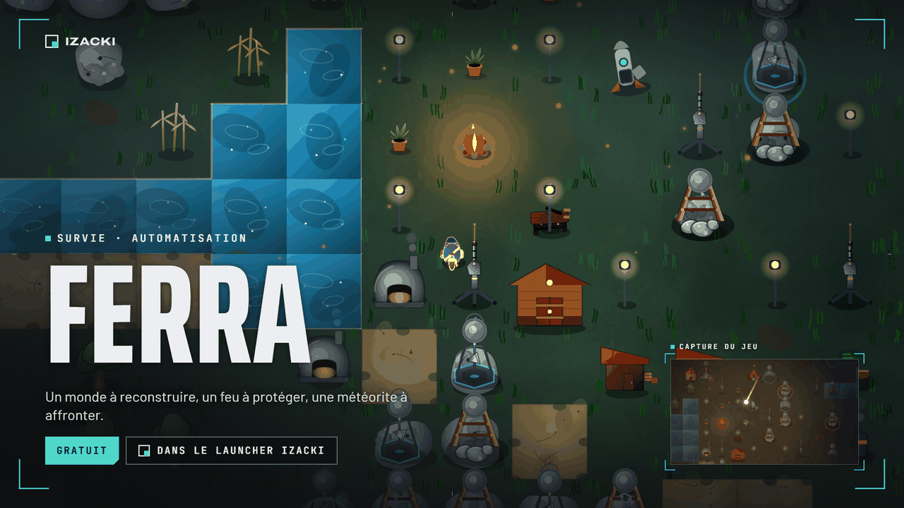
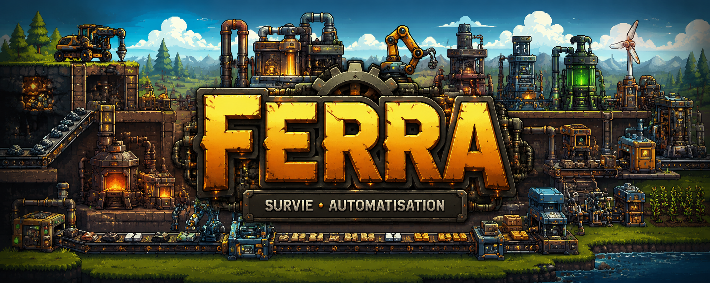
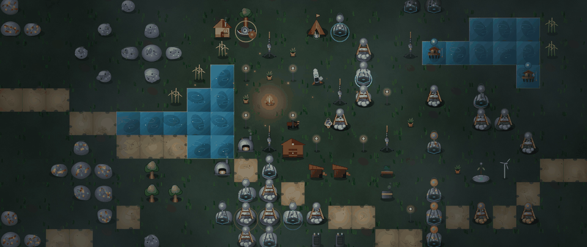
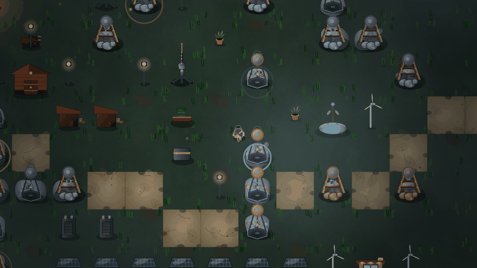
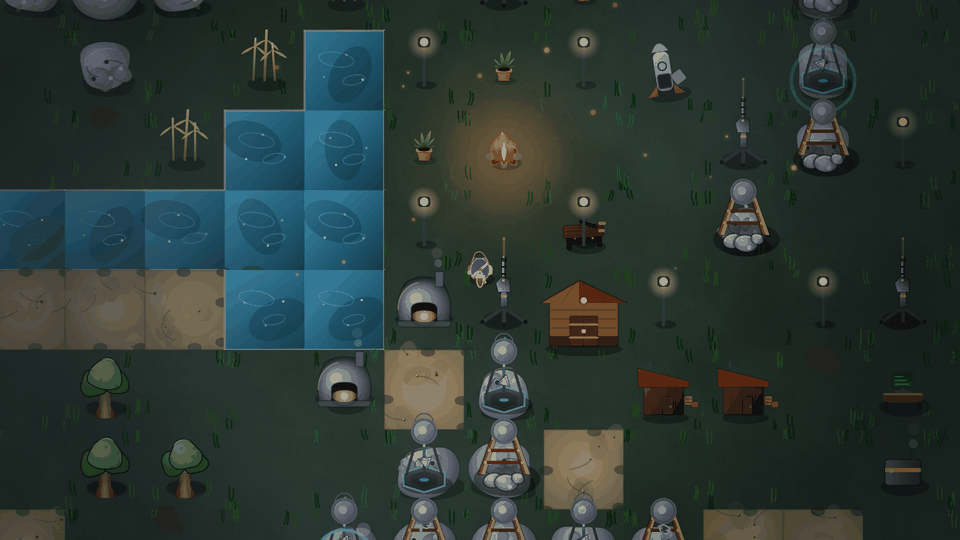
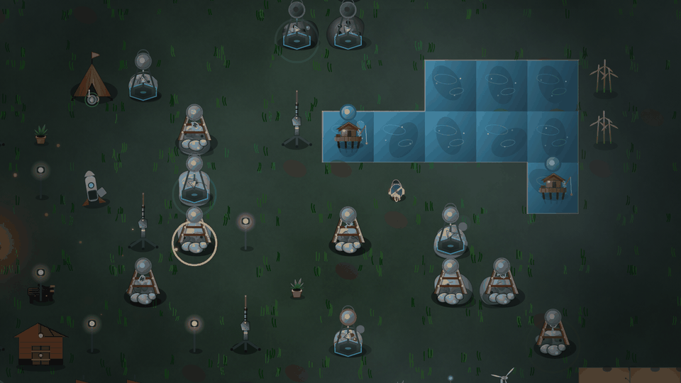
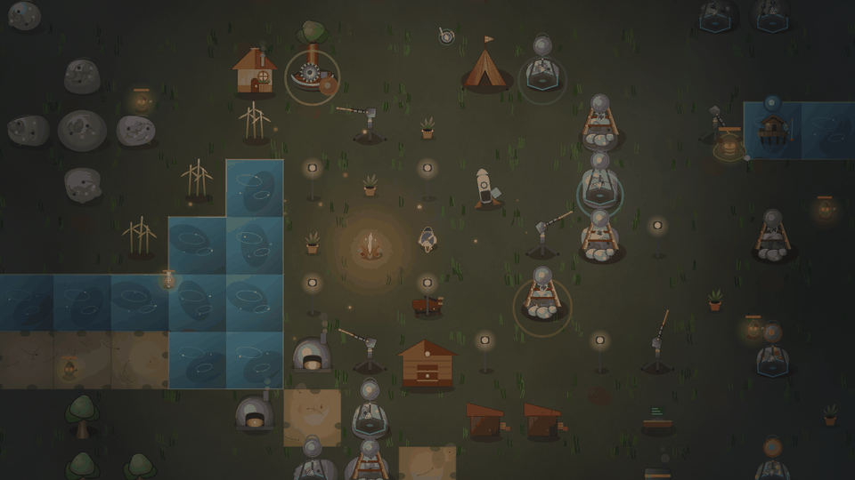
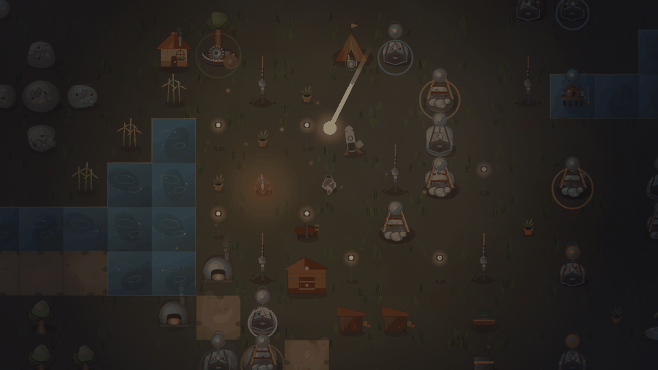
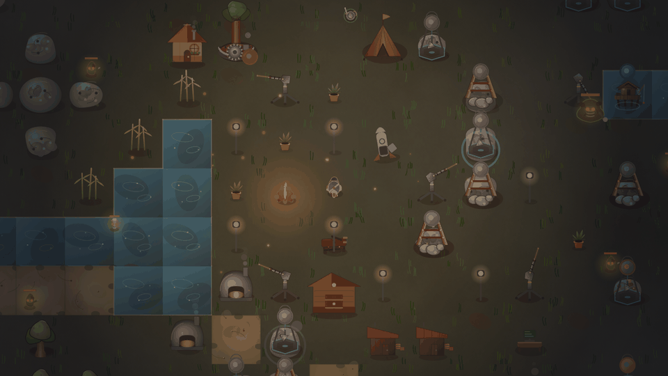

Survie / automatisation
FERRA
Un monde à reconstruire, un feu à protéger, une météorite à affronter. Mine, automatise, défends ton campement, et prépare-toi pour la nuit.
S'installe et se met à jour avec Izacki Launcher

- Version
- 1.0.17
- Mise à jour
- Taille
- Environ 5 Mo
- Prix
- Gratuit
- Plateforme
- Windows 10/11
Présentation
Construire case par case.
Chaque partie de FERRA se construit case par case. Protège ton feu de camp, récolte fer, bois, pierre et cuivre, puis automatise tout avec des foreuses, classiques ou électriques, alimentées par un réseau électrique.
Le jour, on récolte et on construit. La nuit, les monstres rôdent. Au loin, une météorite approche : bunker ou évacuation, à toi de choisir.

Captures
Le camp en images.







Dans le jeu
Ce que contient FERRA.
Récolte et automatisation
Récolte de bois, de pierre, de fer et de cuivre, puis foreuses classiques ou électriques pour automatiser la production.
Réseau électrique
Panneaux solaires, éoliennes, générateurs, centrale nucléaire, batteries et Central alimentent tes machines.
Compétences et métiers
Un arbre de compétences (Combat, Mineur, Bûcheron, Transport, Confort) et cinq métiers : Bûcheron, Mineur, Pêcheur, Fermier, Ingénieur.
Jour, nuit et météo
Le cycle jour/nuit amène des monstres nocturnes. La météo change : pluie, vent fort, neige légère, blizzard, orage, brouillard, éclipse.
Défense
Tourelles, casernes et torche pour tenir jusqu'au matin.
La météorite
Une météorite menace le monde. À toi de choisir entre Bunker Tycoon, un bunker isométrique à aménager, et l'Évacuation.
Succès
Des succès répartis en sept catégories, avec des paliers Bronze, Argent, Or et Platine.
Configuration
Configuration.
Requise
- Système
- Windows 10/11
- Espace
- Environ 5 Mo
- Compte
- Compte Izacki gratuit, pour le Launcher
- Langue
- Français
Conseillée
- Écran
- 1920×1080
- Commandes
- ZQSD (AZERTY) ou WASD (QWERTY), ou flèches, et souris
Nouveautés
Dernières versions.
v1.0.17Une seule fenêtre à la fois
- Le jeu ne s'ouvre plus qu'une seule fois : relancer l'exécutable ramène la fenêtre déjà ouverte au premier plan.
v1.0.16Popup de succès façon Steam
- Quand tu débloques un succès, une carte noire glisse en haut à droite de l'écran avec le médaillon, le nom et la description, pendant environ 5 secondes, avec le petit accord habituel.
- Si plusieurs succès tombent en même temps, les cartes s'affichent l'une après l'autre.
- Les succès débloqués apparaissent aussi en direct dans le Launcher.
v1.0.15Bulle de quête translucide et visite des menus plus claire
- La bulle de quête est maintenant translucide : tu vois le décor à travers.
- Nouveau bouton « Ranger » pour mettre la bulle de quête sur le côté d'un clic. Une pastille « Quête » reste au bord de l'écran pour la rouvrir, et ton choix est mémorisé.
- Visite guidée des menus : le bouton « Passer la visite » ne recouvre plus jamais les bulles d'explication.
v1.0.14Hôtel de Ville, prêts de ressources et refonte des ruines
- Nouveau bâtiment : l'Hôtel de Ville (un seul par partie), qui pose une muraille automatique de 7 cases autour de ton camp, avec une porte.
- Prêts de ressources au Comptoir de Cuivre : bois, pierre et fer, remboursés en 10 jours avec 10 % d'intérêt.
- Fiche des dettes (touche K) : le suivi de tes prêts et de ta dette à la banque en un coup d'œil.
- Carrière entièrement redessinée.
- Ruines : brume colorée, reprise d'une exploration interrompue et interface dédiée.
- Carnet de notes de la capsule, récapitulatif de vente défilant et laser des tourelles retouché.
v1.0.13Cinématique de fin du Sort Divin refaite
- La fin du jeu utilise maintenant le même moteur de cinématique que l'intro.
- Correction : l'interface et l'invite d'interaction restaient affichées pendant la cinématique.
v1.0.11Difficulté des ruines selon la distance
- La difficulté des ruines dépend maintenant de leur distance à ton camp : plus elles sont loin, plus elles sont dures.
v1.0.10Fourneau, feux de camp et corrections d'interface
- Nouveau bâtiment : le Fourneau.
- Nouveaux paliers pour le feu de camp.
- Barre de ressources réorganisée, avec correction d'une coupure d'affichage.
- Corrections du glisser-déposer et du menu contextuel (clic droit).
Télécharger
Installe le Launcher, puis lance FERRA.
Windows 10/11 · moins de 3 Mo
Gratuit, avec un compte Izacki gratuit